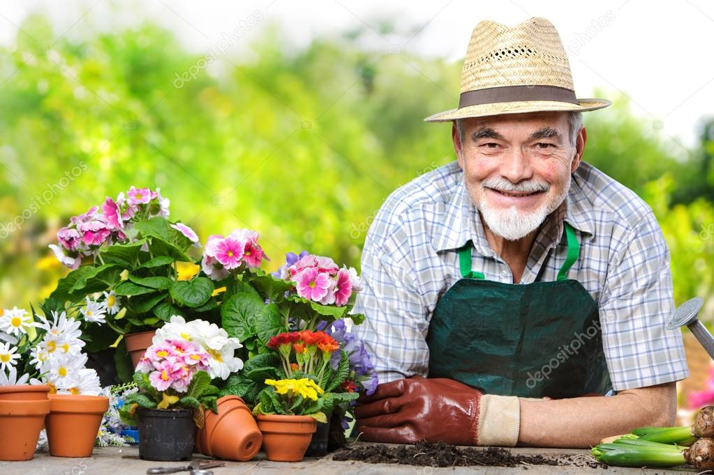

Biz Kimiz?

Biz bu işi, dört kişi ikişerli takımlar halinde yapan bir ekibiz. 49 yıldır fındık toplama, bahçe düzenleme, çiçek ekimi, gübre atımı ve tırpan yapma işleriyle uğraşıyoruz.

Hayalinizdeki Bahçeyi
Sizlere Sunmak İçin
Buradayız.
0545 249 39 69
Biz bu işi, dört kişi ikişerli takımlar halinde yapan bir ekibiz. 49 yıldır fındık toplama, bahçe düzenleme, çiçek ekimi, gübre atımı ve tırpan yapma işleriyle uğraşıyoruz.

İsteğe Göre Bahçe Düzenlemesi ve tasarımı yapıyoruz. Bunlara ek olarak çiçeklerin ekimi,uygun çiçek seçimi gibi işlere bakıyoruz.
Bahçenizin eksikliklerini gideriyoruz. Çiçeklerin ekimi, meyve sebze toplanmasını yapıyoruz.
Gereğinden fazla büyümüş otları, tırpan moturyla temizleme işlemini yapıyoruz.

Yaptığımız projeler


Nasıl çalışıyoruz?
İşimize başlamadan önce sitenin fotoğraflarını çekiyoruz. Sonrasında etraftaki kırılcak malzemeleri bir yere topluyoruz ve kapısı penceresi açık olan yerleri kapatıyoruz.

Motorlarımızı Çalıştırıp tırpan yapmaya başlıyoruz. Genel olarak sırt motorları kullanıyoruz, çünkü köşelerdeki otlar bu motorlarla daha kolay alınıyor. Bu işlemin süresi sitenin büyüklüğüne göre değişmektedir.
Tırpan işleminden hemen sonra, çevreye yayılan otları tırmık yardımı ile temizliyoruz ve bir çöp poşetine doldurup çöpe atıyoruz.

İş bittikten sonra, site yöneticini veya ev sahibini yanımıza çağırıyoruz ve yaptığımız işleri gösteriyoruz ve ücretimizi alıyoruz.
İletişim